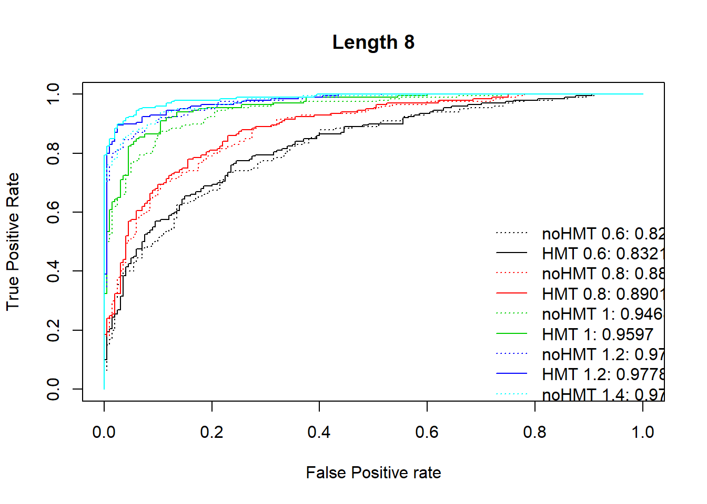
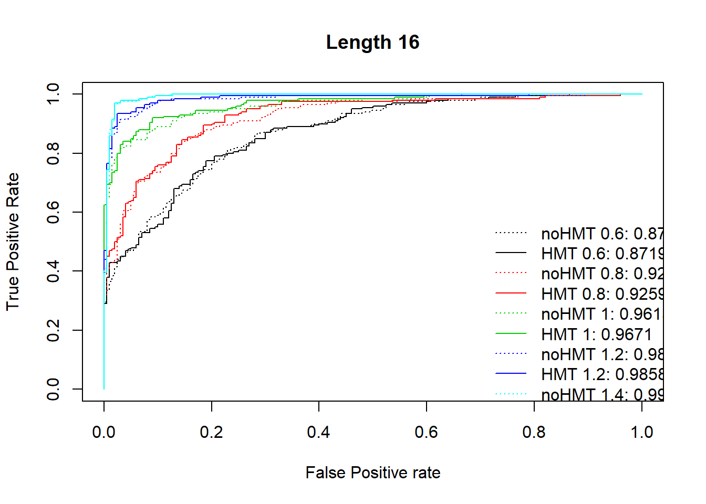
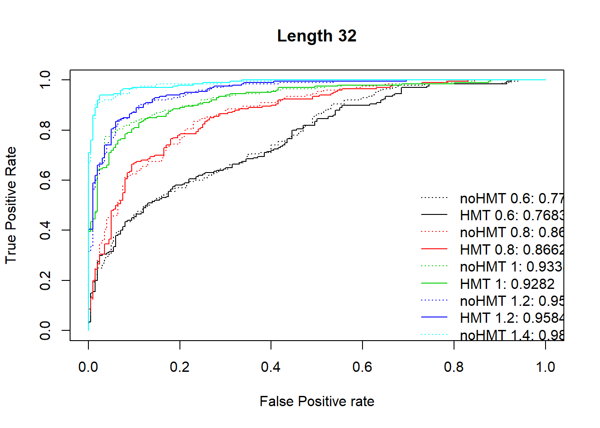
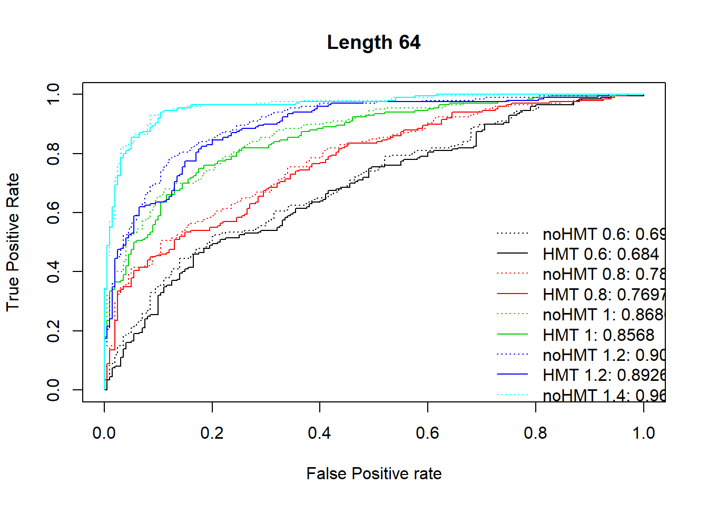
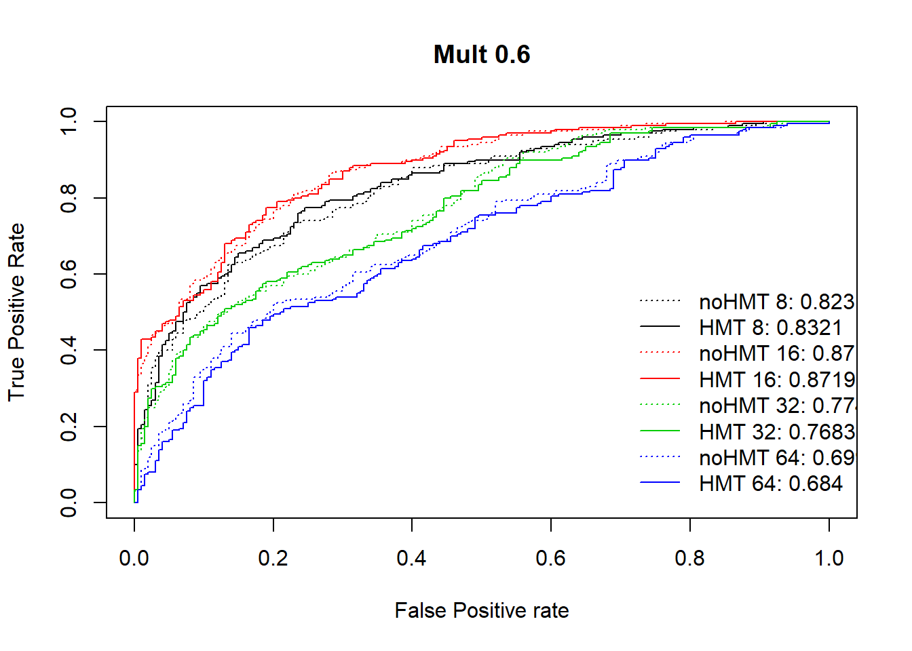
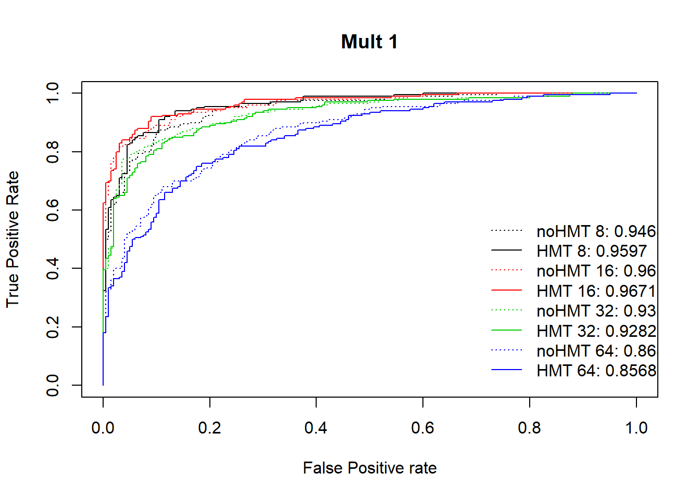
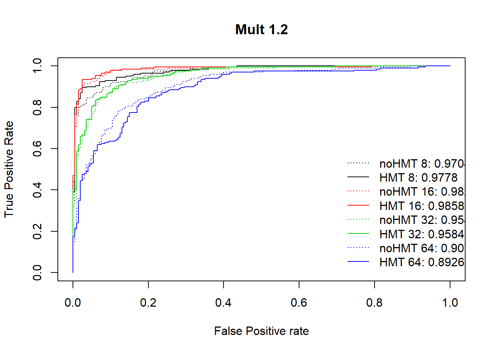
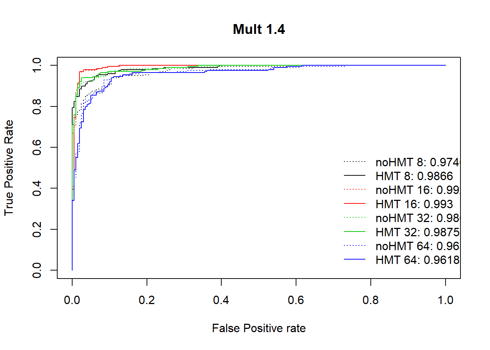

sim4_lhood_thresholding - v1.2
Brendan Law
11/09/2019
Simulation 4 - likelihood auROC testing - HMT vs no HMT
The aim of this simulation is to test HMT vs no HMT on simulated data, measured by auROC.
The goal here is to produce a likelihood/ratio based ROC curve (and to measure auROC) as a diagnostic for whether HMT is able to identify more associations, across many datasets, when altering many of the variables, such as:
- Effect length
- Effect location
- Effect size ratio
- Overdispersion
- Count multiples
This is a more quantitative way of evaluation, than the rather qualitative way we had before.
Methodology:
- Simulate, a number of datasets, from each of alt and null, for a given set of parameters (set effect length, location, size, overdisp, count multiple)
- Clean the data (WC cleaning)
- Run through WaveQTL and WaveQTL_HMT
- Important data to assess is likelihood ratio
- Collect, then construct auROC curve.
- true negatives; null dataset, no effect (0 outcome)
- false positives; null dataset, effect (1 outcome)
- true positives; alt dataset, effect (1 outcome)
- false negatives; alt dataset, no effect (0 outcome)
This page will just show the (pre-saved) results, loaded and analysed. There were three scripts which I ran data off:
- analysis/sim4-1-1_lhood_thresholding.Rmd
- code/sim4_1_1_batch_200.R
- code/sim4_1_1_batch_500.R
Test run
Free params as follows:
- Effect multiple: 1.5e08
- Over-dispersion: 70
- Number simulations: 50

Method 1 - same effect size
Same effect size throughout effect lengths 8,16,32. The good thing here is we’re keeping everything consistent, except effect length, and trying to demonstrate the increased efficacy at smaller effect lengths. The bad thing here is the effect needs to be strong enough to be discernible in a size 8 effect size, meaning it is extremely strong (and hard to discern performance differences) at the 32 effect length.
First parameter set:
Tried to tune the effect size down so it’s a bit less strong at effect length 8, but still shows enough difference at the higher effect lengths. As we can see, it still goes to a perfect curve (effect too strong) at effect length 32.
- Effect multiple: 1e08
- Over-dispersion: 70
- Number simulations: 50

Second parameter set:
Tried a less noisy situation, increase overdispersion parameter by a lot, and decrease the effect size. It’s a little too ideal for the larger effect lengths.
- Effect multiple: 6e07
- Over-dispersion: 700000
- Number simulations: 50

Method 2 - stepped effect size
Stepped effect size, decreasing with the effect length, to show a more ‘comparable’ effect size at each effect length. The idea is to find an effect size such that the auROC curve indicates a similar ‘classification difficult’ at each effect length, and to still show that the difference between HMT and non-HMT decreases (hopefully we’re at a comparable AUC number) as our effect length increases. By picking smaller effect sizes for increased effect lengths, hopefully we can still show slight variations at larger effect lengths, but in line with our hypotheses, very little difference in the general performance ability of HMT and non-HMT at longer effect lengths.
The way I’ve done it is (almost) halving the effect size multiple (rather arbitrarily) at each doubling of the effect length.
First parameter set:
- Effect multiple:
- L8: 1.5e08
- L16: 8e07
- L32: 4e07
- L64: 2e07
- Over-dispersion: 70
- Number simulations: 50
The same thing, with 100 simulations:
- Effect multiple:
- L8: 1.5e08
- L16: 8e07
- L32: 4e07
- L64: 2e07
- Over-dispersion: 70
- Number simulations: 100
The same thing, with 500 simulations: - Effect multiple: + L8: 1.5e08 + L16: 8e07 + L32: 4e07 + L64: 2e07 - Over-dispersion: 70 - Number simulations: 500
Far smoother looking curves:
Then, I tried modifying the stepped effect sizes by multiplying each of them by c = (0.6,0.8,1,1.2,1.4) to see what happened. 200 sims:
- Effect multiple:
- L8: 1.5e08 * c
- L16: 8e07 * c
- L32: 4e07 * c
- L64: 2e07 * c
- Over-dispersion: 70
- Number simulations: 200

Second parameter set:
Again, tried the increased effect size, decreased variance approach:
- Effect multiple:
- L8: 6e07
- L16: 3e07
- L32: 1.5e07
- L64: 7e06
- Over-dispersion: 700000
- Number simulations: 50
Seems to capture what we’re after, could try and increase the multiple to 8e07, for slightly less noise in the system.